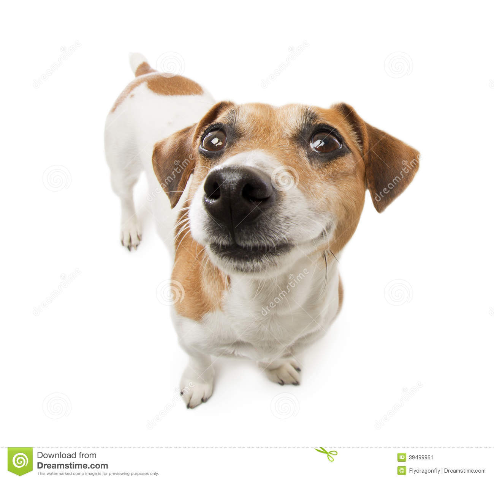
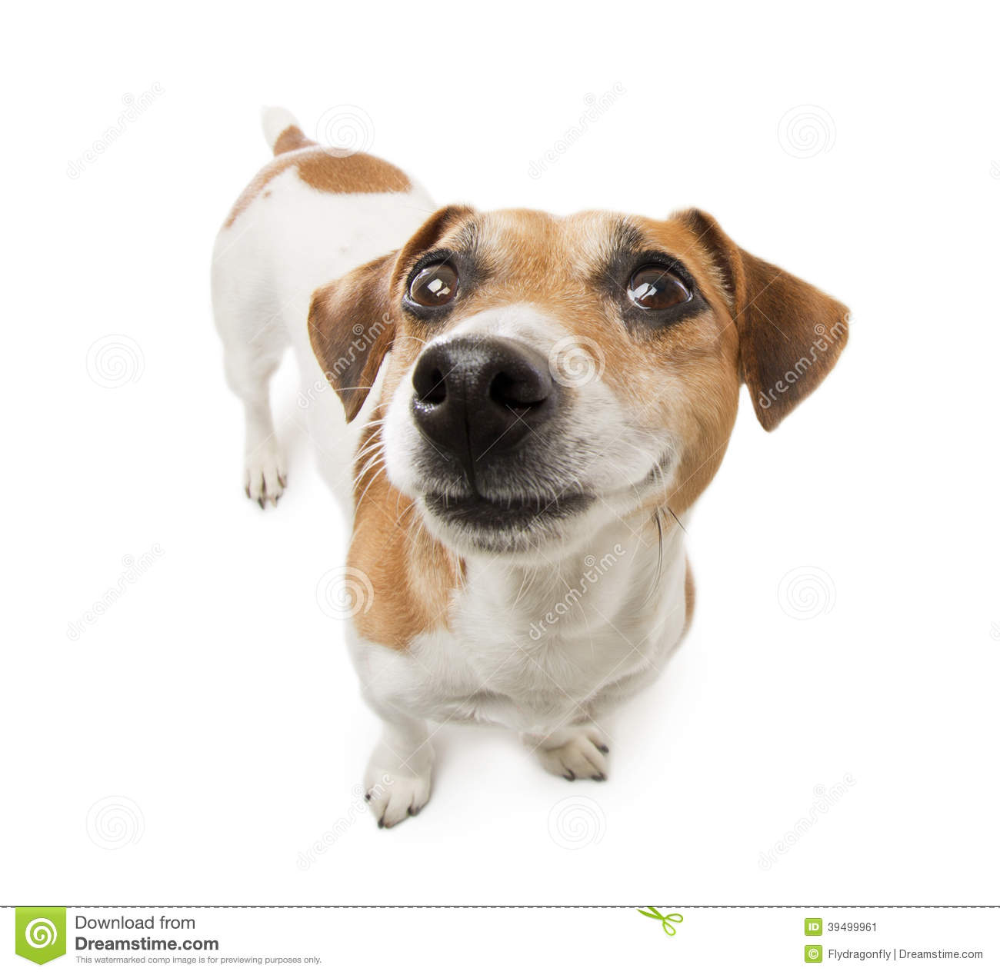

Dante
Idade: 9 meses
Caracteristicas:
Esfomeado e tem bastante energia
O Dante não pode ver um pote de ração que já fica todo alegre. Ele se
dá muito bem com outros cachorros de todos os tipos. Dante é doido por
uma bolinha, se você jogar, pode ter certeza que ele vai todo feliz
buscar. O Dante tem bastante energia, então se voce gosta de caminhar,
passear ou brincar, ele será seu ótimo companheiro.
 
